{{ a.year }}
{{ a.name }}
{{ a.year }}｜{{ a.name }}
{{ a.title }}
主辦／來源｜{{ a.source }}
{{ a.desc }}
Awards & Research
以研究深化醫療，以成果見證專業。


Awards
專業與創新，獲得持續肯定
{{ a.year }}｜{{ a.name }}
{{ a.title }}
主辦／來源｜{{ a.source }}
{{ a.desc }}
{{ a.year }}｜{{ a.name }}
{{ a.title }}
主辦／來源｜{{ a.source }}
{{ a.desc }}
Research
{{ p.zh }}
{{ p.en }}
{{ p.journal }}
{{ p.zh }}
{{ p.en }}
{{ p.journal }}
中文作者｜{{ p.authors }}
英文作者｜{{ p.enAuthors }}
查看檔案